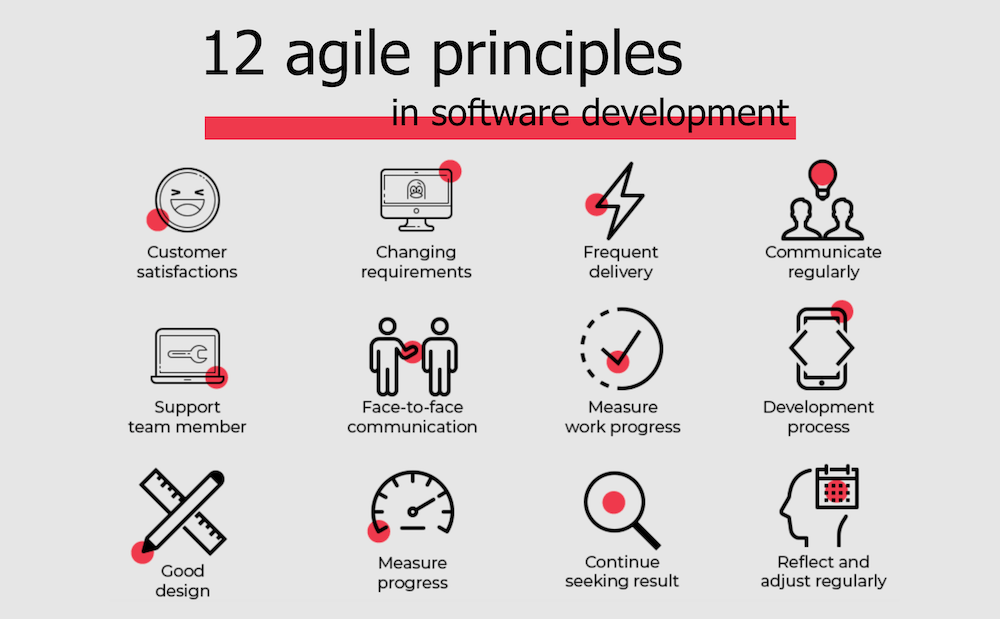
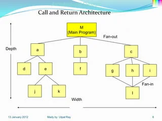
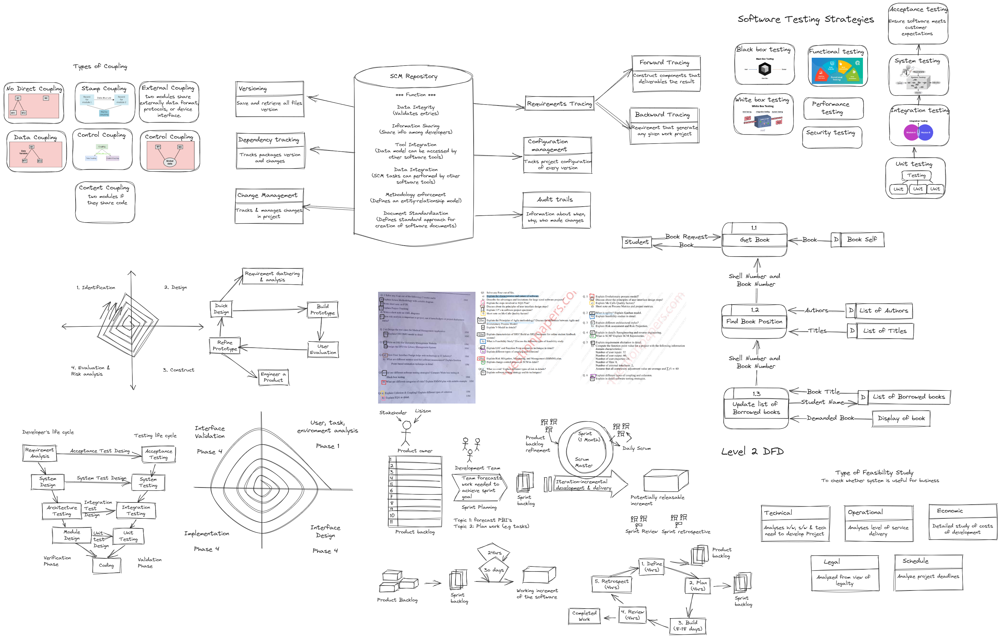

SE Notes
Coupling (3)
It measures how closely the modules are connected and how much they rely on each other.
It measures how closely the modules are connected and how much they rely on each other.


Cohesion (3)

Refers to the degree to which the responsibilities of a single module are related and focused.
It measures how strongly the internal elements of a module are connected and work together to achieve a common purpose.
Types of Modules Cohesion

Software Testing Strategies (3)

Objective of software testing

Black Box vs White Box
| Black Box Testing | White Box Testing |
|---|---|
| It is a way of software testing in which the internal structure or the program or the code is hidden and nothing is known about it. | It is a way of testing the software in which the tester has knowledge about the internal structure or the code or the program of the software. |
| Implementation of code is not needed for black box testing. | Code implementation is necessary for white box testing. |
| It is mostly done by software testers. | It is mostly done by software developers. |
| No knowledge of implementation is needed. | Knowledge of implementation is required. |
| It can be referred to as outer or external software testing. | It is the inner or the internal software testing. |
| It is a functional test of the software. | It is a structural test of the software. |
| This testing can be initiated based on the requirement specifications document. | This type of testing of software is started after a detail design document. |
| No knowledge of programming is required. | It is mandatory to have knowledge of programming. |
| It is the behavior testing of the software. | It is the logic testing of the software. |
| It is applicable to the higher levels of testing of software. | It is generally applicable to the lower levels of software testing. |
| It is also called closed testing. | It is also called as clear box testing. |
| It is least time consuming. | It is most time consuming. |
| It is not suitable or preferred for algorithm testing. | It is suitable for algorithm testing. |
| Can be done by trial and error ways and methods. | Data domains along with inner or internal boundaries can be better tested. |
| Example: Search something on google by using keywords | Example: By input to check and verify loops |
| Black-box test design techniques- - Decision table testing - All-pairs testing - Equivalence partitioning - Error guessing |
White-box test design techniques- - Control flow testing - Data flow testing - Branch testing |
| Types of Black Box Testing: - Functional Testing - Non-functional testing - Regression Testing |
Types of White Box Testing: - Path Testing - Loop Testing - Condition testing |
| It is less exhaustive as compared to white box testing. | It is comparatively more exhaustive than black box testing. |
Software Configuration Management (SCM) (2)
The concentric layers of software configuration management (SCM) can be thought of as a set of processes and tools that help teams to identify, control, track, and report on changes to a software system throughout its lifecycle.
SCM Components
- Configuration identification:
- Baselines are established to clearly define the state of the software after changes have been made.
- Common baselines include functional or requirements baseline, design baseline, and product or system baseline.
- Change control:
- The configuration control board (CCB), headed by the configuration manager, is responsible for most decisions regarding changes.
- A change is initiated by a change request, which typically consists of the change description, reason, affected items, and priority.
- Status accounting and auditing:
- Status accounting relies on change requests (CRs) and functional requirements (FRs) to track changes.
- A summary of information from CRs and FRs can be used by the project manager and the CCB to track all the changes.
SCM Repositories

SCM Process

Concentric layers
The concentric layers of software configuration management (SCM) can be thought of as a set of processes and tools that help teams to identify, control, track, and report on changes to a software system throughout its lifecycle.
- Identification
- This involves identifying all of the items that make up the software system, such as source code, documentation, test cases, and configuration files.
- Change control
- This involves establishing and enforcing processes for managing changes to the software system.
- This may include processes for submitting change requests, reviewing changes, and approving changes.
- Version control
- This involves tracking the different versions of the software system as it evolves over time.
- Version control systems allow teams to create, manage, and track multiple versions of the software system simultaneously.
- Configuration auditing
- This involves conducting regular audits to ensure that the software system is in compliance with its baselines.
- Baselines are snapshots of the software system that are used to measure progress and ensure that the system is meeting its requirements.
- Status reporting
- This involves generating and distributing reports on the status of the software system.
- Status reports can provide information on the current state of the system, any recent changes that have been made, and any outstanding issues.
Feasibility Study (2)
A detailed analysis that considers all of the critical aspects of a proposed project in order to determine the likelihood of it succeeding.

- Collaborative requirement gathering - collaborating with customer and identifying there problems.
- Aim -> to identify problem -> to suggest solution -> to negotiate different approaches. -> to specify preliminary set of solution requirements
- Quality function Deployment - technique that translates customer needs into technical requirements for software.
- Normal requirements - stated by customer (E.g: Graphic displays, specified o/p formats)
- Expected requirements - Not clearly stated by customer but still customer expects them. (E.g: system should be user friendly, system should be menu driven)
- Exciting requirements - Neither stated by customer not expected (developer incudes to make customer more satisfied)
Risk (2)
RISK IDENTIFICATION

Risk identification is a systematic attempt to specify threats to the project plan(estimates, schedule, resource loading, etc.).
- There are two distinct types of risks:
- Generic risks are a potential threat to every software project.
- Product-specific risks can be identified only when the project plan and the software statement of scope are examined and an answer to the question is developed:
The checklist can be used for risk identification and focuses on some subset of known and predictable risks in the following generic subcategories:
- Product size
- Business impact
- Customer characteristics
- Process definition
- Development environment
- Technology to be built
- Staff size and experience
Risk drivers that affect software risk components :
- Performance risk
- Cost risk
- Support risk
- Schedule risk
The impact of each risk driver on the risk component is divided into one of four impact categories:
- Negligible
- Marginal
- Critical
- Catastrophic.
RISK PROJECTION

- Risk projection, also called risk estimation attempts to rate each risk in two ways the likelihood or probability that the risk is real and consequences of the problems associated with the risk.
- Developing Risk Table

RISK ASSESSMENT
Risk Assessment is a process of estimating the probability and impact for each risk.

Risk Assessment:
- Risk Identification - produces lists of the project-specific risk items likely to compromise a project's success.
- Risk Analysis - assesses the loss probability and loss magnitude for each identified item, and it assesses compound risks in risk-item interactions.
- Risk Prioritization - produces a ranked ordering of the risk items identified and analyzed.
McCall’s Quality Factors (2 5m)

- Introduced in 1977
- The model distinguishes between two levels of quality attributes:
- Quality Factors: The higher-level quality attributes which can be accessed directly are called quality factors. These attributes are external attributes.
- Quality Criteria: The lower or second-level quality attributes that can be accessed either subjectively or objectively are called Quality Criteria. These attributes are internal attributes.
Agile (2)
Agile is process model includes concept of developer along with set of guidelines important for development process.
Light-weight method are people-based rather the plan-based methods.
Principles

- Customer Satisfaction
- Welcome changing requirements
- Working software is delivered frequently (weekly rather then months).
- Daily co-operation between business people & developers
- Project are build around motivated individuals.
- Face-to-face conversation
- Working software
- Maintain a constant pace
- Continuous attention to technical excellence & good design
- Simplicity
- Best architecture, requirements, & design.
- Regularly reflect on becoming more effective & adjusts accordingly.
Evolutionary Process Model
- Evolutionary model is a combination of Iterative and Incremental model of SDRC.
- The evolutionary model is based on the concept of making an initial product and then evolving the software product over time with iterative and incremental approach with proper feedback.
- The development is carried out simultaneously with feedback of customer.
- This model has number of advantages such as customer involvement, taking feed from the customer and building the exact product that user wants.
- There are two types:
- Spiral model
- Prototyping model
Advantages & Disadvantages of Evolutionary process model
Advantages
- Customer satisfaction is higher.
- Suitable for big & complex project.
- After every iteration risk get analyzed.
Disadvantages
- Not suitable for small projects.
- High cost
- This model is more complex.
Disadvantages
Kanban


- Leap time: Time span between time as ask enters work system.
- Cycle time: how much time spend working on prioritized task.
Agile and Evolutionary model
| Criteria | Agile Model | Evolutionary Model |
|---|---|---|
| Planning and Documentation | Emphasizes adaptive planning and minimal documentation | Involves significant planning and documentation with updates to the requirements document throughout the development process |
| Requirements Gathering | High level requirements set at the beginning, detailed planning done incrementally before each iteration | Entire project requirements gathered and documented at the early stage |
| Customer Involvement | Customer feedback and involvement throughout the project | User and customer involvement needs to be increased |
| Delivery Speed | Fast delivery of software | Delivery speed can be improved |
| Testing | Testing is done throughout the development process | Testing is typically performed at the end of the lifecycle |
| Code Reusability | Promotes code reusability | Code reusability is not emphasized |
| Relationship between Cohesion and Coupling | High cohesion and low coupling | Cohesion and coupling are not directly related |
V-model

The V-model is SDLC model where execution of processes happens in a sequential manner in a V-shape.
It also know as verification & validation model.
It is a extension of the waterfall model and is based on the association of a testing phase for each corresponding development stage.
Advantages & Disadvantages of V-Model
Advantages
- Time saving
- Progress can be tracked easily
- Every component is tested
Disadvantages
- Risk analysis not done
- Not suitable for complex projects
Verification Phase
- Business Requirement Analysis
- This is the first phase in the development cycle where the product requirements are understood from the customers perspective.
- System Design
- Once you have the clearly and detailed product requirements, it is time to design the complete system.
- The system design will have the understanding and detailing the complete hardware and communication setup for product under development.
- Architecture Design
- This is also know as High Level Design(HLD).
- In this phase architectural specification are understood and designed.
- Model Design
- This is also know as Low Level Design(LLD). The whole architecture is broken into small units & designed separately.
- Coding Phase
- The actual implementation of software takes place in coding phase.
- The coding is performed based on the coding guidelines & standards.
Validation Phase
- Unit Testing
- It is designed in the module design phase are executed on the code during this validation phase.
- Integration Testing
- It is associated with architectural design phase.
- It is performed to test that co-existence and communication of the internal modules within the system.
- System Testing
- Associated with system design phase checks the entire system functionality.
- Acceptance Testing
- associated with business requirement analysis phase.
- Use to test the compatibility issues with other systems available in user environment.
Software Requirement Specification (SRS)

- Software Requirement Specification (SRS) Format is a complete specification and description of requirements of the software that need to be fulfilled for the successful development of the software system.
- These requirements can be functional as well as non-functional depending upon the type of requirement.
- The interaction between different customers and contractors is done because it is necessary to fully understand the needs of customers.
- Software requirement specification is a kind of document which is created by a software analyst after the requirements collected from the various sources - the requirement received by the customer written in ordinary language.
- It is the job of the analyst to write the requirement in technical language so that they can be understood and beneficial by the development team.

RMMM Model (2 Comp)
The RMMM stands for (Risk Mitigation Monitoring Management)
Risk Mitigation

- It is an activity used to avoid problems.
- Steps to avoid risk:
- Finding out the risk.
- Removing causes that are responsible for risk creation
- Controlling the corresponding documents from time to time.
- Conducting timely reviews to speed the work.
Risk Monitoring
- It is an activity used for project tracking.
- Steps to risk monitoring:
- To check it predicted risks occurs or not.
- To collect data for future risk analysis.
- To allocate which problems are caused by which risks.
Risk Management

- Risk management task is done by project manager which risk become reality and cause severe problems.
- If the project manager effectively uses project mitigation to remove risk successful turn it easer to manage the risks.
- The main objective of risk management plan is the risk register.
- The risk register describes and focuses on the predicted treats to a software project.
Drawbacks of RMMM
- It increases project costs.
- It takes additional time.
- For large project, RMMM implementation is very hard.
User Interface Golden Rules (2 Comp)

There are Two types of User Interface(UI)
- Command Line Interface(CLI)
- Provides a command prompt, where the user types the command and feeds to the system.
- The user needs to remember the syntax of the command and its use.
- Graphical User Interface(GUI)
- Provides thee simple interactive interface to interact with the system.
Golden Rules
- Place the user in control
- The interaction should be defined in such a way that the user is not forced to implement unnecessary actions.
- The technical internal details must be hidden for the casual user.
- Design for the direct interaction with objects that appear on the screen.
- Reduce the user's memory load
- The user interface must be designed in such a way that it reduces the demands on the user's short term memory.
- There must be reset option for obtaining the default values.
- The shortcut should be easily remembered by the users.
- The interface screen should be friendly to users.
- Make the interface consistent
- The system must allow the user to put task into meaningful context.
- Consistency should be maintained for all the interaction.
- Do not change the past system that is created by the User expectation unless there is a good reason to do that.
SOFTWARE QUALITY ASSURANCE (SQA) (2 Comp)
Software quality assurance (SQA) is a process that ensures that developed software meets and complies with defined or standardized quality specifications.

SQA Task
A SQA Plan revolves around making sure that the product or service teaches the market trouble and bug-free.
It should also meet the requirements defined in the SRS (software requirement specification).
The purpose of an SQA plan is three-fold. It comprises the following:
- Establishing the QA responsibilities of the team in question
- Listing areas of concern that need to be reviewed, audited and looked at
- Identifies the SQA work products
SQA Task
- Prepares an SQA plan for a project
- Participates in the development of the project's software process description
- Reviews software engineering activities to verify compliance with the defined software process
- Audits designated software work products to verify compliance with those defined as a part of the software process
- Ensures that deviations in software work and work products are documented and handled according to a documented procedure
- Records any noncompliance and reports to senior management
Lines of Code (LOC)
Size oriented measure is derived by considering the size of software that has been produced.
The size measure is based on the lines of code computation.
The lines of code is defined as one line of text in a source file.
While counting the lines of code the simplest standard is:
- Don't count blank lines
- Don't count comments.
- Count everything else.
The size oriented measure is not universally accepted method.
| Project | LOC | Effort | Cost($) | Doc (Pgs) | Errors | Defects | People |
|---|---|---|---|---|---|---|---|
| ABC | 10,000 | 20 | 170 | 400 | 100 | 12 | 4 |
| PQR | 20,000 | 60 | 300 | 1000 | 129 | 32 | 5 |
| ... | ... | ... | ... | ... | ... | ... | ... |
A simple set of size measure that can be developed is as given below:
- Size = Kilo Lines of Code (KLOC)
- Effort = Person/month
- Productivity = KLOC/person-month
- Quality = Number of faults/KLOC
- Cost = $/KLOC
- Documentation = Pages of documentation/KLOC
Advantages
- Most used metric in cost estimation.
- It is very easy to estimate the efforts.
- Used in many models like COCOMO.
- Estimation is closer to developer’s perspective.
- Simple to use.
Disadvantages
- It correlates poorly with quality & efficiency of code.
- It doesn't consider complexity.
- Difficult to measure in the early stages of a new product.
Function Point (FP)
Decomposition for FP-based estimation focuses on information domain values rather than software functions.
| Information domain value | Opt. | Likely | Pess. | Est. count | Weight | FP count |
|---|---|---|---|---|---|---|
| Number of external input | 20 | 24 | 30 | 24 | 4 | 97 |
| Number of external output | 12 | 15 | 22 | 16 | 5 | 78 |
| Number of external inquires | 16 | 22 | 28 | 22 | 5 | 88 |
| Number of internal logical files | 4 | 4 | 5 | 4 | 10 | 42 |
| Number of external interface files | 2 | 2 | 3 | 2 | 7 | 15 |
| Count Total | 320 |
Each of the complexity weighting factors is estimated, and the value adjustment factor is computed.
| Factor | Value |
|---|---|
| Backup and recovery | 4 |
| Data communications | 2 |
| Performance critical | 4 |
| Distributed processing | 0 |
| Existing operating environment | 3 |
Finally, the estimated number of FP is derived: $FP_{estimated} = \text{count total} \times [0.65 + 0.01 \times \sum(F_t) = 375]$
Re-Engineering (BPR)

- It is process of analyzing, redesigning, and rebuilding an existing software system to improve its quality, performance, maintainability, and/or flexibility.
- It is a process of re-structuring or re-writing components of old software application without modifying its functionality.
Process of Re-Engineering
- Decide which components of software we want to re-engineer.
- Do reverse engineering to find out features of existing software.
- Perform re-construction of source-code if needed.
- Use forward-engineering idea to generate re-engineered software.
Reverse Engineering

- Software reverse engineering is a process of recovering the design, requirement specification and functions of the a existing product from an analysis of its code.
- The purpose of reverse engineering is to facilitate the maintenance work by improving the understandability of a system and producing the necessary document for a system.
- Software reverse engineering is performed to find out the source code of a program since the source code used to study in order to enhance the performance of a program repair a bug, detect unsecure content etc.
Forward Engineering

- Forward engineering is a method by which we can create an application according to the given requirements.
- Another word for forward engineering is renovation.
- The Time needed to design an application is long, and very high competency skills are required.
- Forward engineering is essentially a strategy that allows us to produce complex high-level designs using complex low-level information.
Architectural Views & Style
Style
An architectural styled is a set of design principles and constraints that are used to guide the design of a software system.
Classification of Architectural Styles:
- Data-centered styles
- These styles focus on the data that system needs to manage.
- Example include database centric styles and file-based styles.
- Data-flow architecture

- This architecture is applied when the input data is converted into a series of manipulative components into output data.
- Call and return architectures
- architecture style allows to achieve a program structure which is easy to modify.
- Following are the sub styles exist in this category:
- Main program or subprogram architecture: The program is divided into smaller pieces hierarchically.

- Remote procedure call architecture: The main program or subprogram components are distributed in network of multiple computers.

- Main program or subprogram architecture: The program is divided into smaller pieces hierarchically.
- Object-oriented architectures

- This architecture is the latest version of call-and-return architecture.
- It consist of the bundling of data and methods.
Layered architectures
Views


- The views are used to describe the system from the viewpoint of different stakeholders, such as end-users, developers, system engineers, and project managers.
- The 4+1 views of model are:
- Logical view
- The logical view is concerned with functionality that the system provides to end-users.
- Process view
- The process view deals with the dynamic aspects of the system, explains the system processes and how they communicate, and focuses on the run time behavior of the system.
- Development view
- The development view (aka the implementation view) illustrates a system from a programmer's perspective and is concerned with software management.
- Physical view
- (aka deployment view) depicts the system form system engineer's point of view. It is concerned with the topology of software components on the physical layer as well as the physical connections between these components.
- Scenarios
- The description of an architecture is illustrated using a small set of use cases, or scenarios, which become a fifty view.
- This view is also know as the use case view.
- The scenarios describe sequences of interaction between objects and between processes.
- Logical view
3 P's Management Spectrum
- For properly building a product, there's a very important concept that we all should know while developing a product.
- There are basically 3 critical components know as 3P's
- People
- Product
- Process

People
The most important of a product and its successful implementation is human resources.
In building a proper product, a well-managed team with clear-cut role defined for each person/item will lead to the success of the product.
We need to have a good team in order to save our time, cost and effort.
Product
As the name suggests, this is the result of the project.
The project manager should clearly define the product scope to ensure a successful result, control team members as will as technical hurdles face by the team.
Product can consist of tangible/intangible components.
Process
In every planning, a clearly defined process is the key to the success of any product.
It regulates how the team will go about it's development in the respective time period.
The process has several steps involved like documentation phase, implementation phase etc.

Elicitation

Requirements elicitation Activities:
- Knowledge of the overall area where the systems is applied.
- The details of the precise customer problem where the system is going to be applied must be understood.
- Interaction of system with external requirements.
- Detailed investigation of user needs.
- Define the constraints for system development.
Requirements elicitation Methods:
- Interviews
- Brainstorming Sessions
- Facilitated Application Specification Technique (FAST)
- Quality Function Deployment (QFD)
- Use Case Approach
Advantages of Requirements Elicitation:
- Helps to clarify and refine customer requirements.
- Improves communication and collaboration between stakeholders.
- Increases the chances of developing a software system that meets customer needs.
- Avoids misunderstandings and helps to manage expectations.
- Supports the identification of potential risks and problems early in the development cycle.
- Facilitates the development of a comprehensive and accurate project plan.
- Increases user and stakeholder confidence in the software development process.
- Supports the identification of new business opportunities and revenue streams.
Disadvantages of Requirements Elicitation:
- Can be time-consuming and expensive.
- Requires specialized skills and expertise.
- May be impacted by changing business needs and requirements.
- Can be impacted by political and organizational factors.
- Can result in a lack of buy-in and commitment from stakeholders.
- Can be impacted by conflicting priorities and competing interests.
- May result in incomplete or inaccurate requirements if not properly managed.
- Can lead to increased development costs and decreased efficiency if requirements are not well-defined.
SCRUM
- Type of Agile Framework
- Iterative & incremental s/w development framework.
- For managing knowledge work, with an emphasis on s/w development.
- Designed for team of 3-9 members -> who break their work into accounts that can be completed within time boned iteration called sprints, no longer then 1 month & most commonly 2 weeks, -> then track progress -> replan in 15min stand-up meeting, called "Daily Scrums".
- Enables teams to self-organize by online collaboration of team members.

SCRUM Framework
In all framework activates, work tasks happen within a process pattern called a "Sprint"
Terminologies Used:
- SCRUM team - contains product owner, development team & scrum master.
- Product owner - Responsible for product backlog.
- SCRUM master - Responsible for SCRUM process.
- Development team - Responsible for delivering product.
- Sprint Bum Down Chart - Daily sprint progress.
- Release burn down chart - Chart for completed product backlog.
- Product backlog - List of priority-wise requirement.
- Sprint backlog - List of task to be completed which are prioritized.
- Sprint - Period in which development occurs.
- Spike - Period in which used to research concept.
- Task - Items added to sprint backlog at beginning of sprint which are broken into hours.

Scrum Process

- Define
- Defining requirement
- Scrum team, "Mater & Product owner" sit together to decide priority of team for duration of sprint.
- For high level directions for team.
- Plan
- Selecting items for product backlog
- Evaluates value of different items & estimate efforts need by scrum team.
- Build
- Task from sprint backlog selected for detection.
- Review
- Presented by scrum team to product owner about implementation of items.
- Retrospect
- Final step
- Focuses on identifying improvement area by scrum team
- Also discuss on success of earlier iterations.
Formal Technical Review
**

- A FTR is a software quality assurance activity performed by software engineers with the following objectives:
- to uncover errors in function, logic or implementation of the software
- to verify that the software meets its requirements
- to ensure that the software has been developed according to the standards
- to achieve uniform software
- to make projects manageable.
The Review Meeting
Each review meeting should be held considering the following constraints- Involvement of people
- Between 3, 4 and 5 people should be involve in the review.
- Advance preparation should occur but it should be very short that is at the most 2 hours of work for every person.
- The short duration of the review meeting should be less than two hour. Gives these constraints, it should be clear that an FTR focuses on specific (and small) part of the overall software.
At the end of the review, all attendees of FTR must decide what to do.
- Accept the product without any modification.
- Reject the project due to serious error (Once corrected, another app need to be reviewed), or
- Accept the product provisional (minor errors are encountered and should be corrected, but no additional review will be required).
Review Guidelines
Guidelines for the conducting of formal technical reviews should be established in advance. These guidelines must be distributed to all reviewers, agreed upon, and then followed. A review that is unregistered can often be worse than a review that does not minimum set of guidelines for FTR.
- Review the product, not the manufacture (producer).
- Take written notes (record purpose)
- Limit the number of participants and insists upon advance preparation.
- Develop a checklist for each product that is likely to be reviewed.
- Allocate resources and time schedule for FTRs in order to maintain time schedule.
- Conduct meaningful training for all reviewers in order to make reviews effective.
- Reviews earlier reviews which serve as the base for the current review being conducted.
- Set an agenda and maintain it.
- Separate the problem areas, but do not attempt to solve every problem notes.
- Limit debate and rebuttal.
Project Tracking
- Project schedule provides a road map for a software project manager.
- Project schedule defines the tasks & milestones that must be tracked & controlled as the project proceeds.
- Project Managers can use the tools and techniques to develop, monitor, and control project timelines and schedules.
- The tracking tools can automatically produce a pictorial representation of the project plan.
- These tools also instantly update time plans as soon as new information is entered and produce automatic reports to control the project.
- Scheduling tools also look into Task breakdown and Risk management also with greater accuracy and ease of monitoring the reports.
- It also provides a good GUI to effectively communicate with the stakeholders of the project.
Features of Project Scheduling Tools
- Time management: The project scheduling tools keep projects running the way it is planned. There will be proper time management and better scheduling of the tasks.
- Resource allocation: It provides the resources required for project development. There will be proper resource allocation and it helps to make sure that proper permissions are given to different individuals involved in the project. It helps to monitor and control all resources in the project.
- Team collaboration: The project scheduling tool improves team collaboration and communication. It helps to make it easy to comment and chat within the platform without relying on external software.
- User-friendly interface: Good project scheduling tools are designed to be more user-friendly to enable teams to complete projects in a better and more efficient way.
Benefits of Project Scheduling Tools
- Defines work tasks: The project scheduling tool defines the work tasks of a project.
- Time and resource management: It helps to keep the project on track with respect to the time and plan.
- Cost management: It helps in determining the cost of the project.
- Improved projectivity: It enables greater productivity in teams as it helps in smarter planning, better scheduling, and better task delegation.
- Increased efficiency: The project scheduling tool increases speed and efficiency in project development.
Criteria for Selecting Project Scheduling Tools
Capability to handle multiple projects: The scheduling tool must handle multiple projects at a time.
User-frinedly: It should be easy to use and must have a user-friendly interface.
Budget friendly: The tool should be of low cost and should be within the development budget.
Security features: The tool must be secured and risk-free from vulnerable threats.
Project Scheduling Tools
Microsoft Project
Daily Activity Reporting and Tracking (DART)
ProjectManager.com
GanttPRO
Zoho Projects
- ### Microsoft Project
-Microsoft offers a Project Management tool named Microsoft Project for Project
Planning activities.
-It is simple to use Microsoft Projects for scheduling projects.
-It generates a variety of reports and templates as per Industry standards. It can
produce data in diagrams or charts in pictorial form.
-Themes and templates can be customized as per the user.
-It supports cloud services and can share data remotely with other users.
Features:
Creating the project.
Assigning resources to the task.
Tracking the process.
Managing the cost of the project.
Analysis of the project.
Automatic / Manual Scheduling for specific tasks or the entire project.
To accomplish the tasks, deadlines are set.
- ### Daily Activity Reporting and Tracking (DART)
-DART Daily Activity Reporting Tool, enables you to track the changes to record
made by users.
-Many organizations use the DART tool which monitors the progress of the
software project.
-DART collects the project data and keeps track of the activities in the process. -DART which tracks the progress of the project is called an indicator that computes
the project plan.
-The DART is used to scale the software project stakeholders regarding the
performance and updates of the project.
Features:
Defines work tasks and their Interdependencies.
Provides the ability to dispatch the email with a summary of changes.
Tracks the process and changes in the project plan.
Analyzing the project plan.
Manages budget for the project.
**
COCOMO Model
**

- The Constructive Cost Model (COCOMO) is an algorithmic software cost estimation
- Model developed by Barry Boehm.
- The model uses a basic regression formula, with parameters that are derived from historical project data and current project characteristics.
- COCOMO II is the successor of COCOMO 81 and is better suited for estimating modern software development projects.
- It provides more support for modern software development processes and an updated project database.
- COCOMO II is tuned to modern software life cycles.
The original COCOMO model has been very successful, but it doesn't apply to newer software development practices as well as it does to traditional practices.
COCOMO II models:
The Application Composition Model
- Used in early stages of development, when user i/fs, system interaction, performance assessment and technology evaluation are prime important.
The Early Design Model
- Once requirements are stabilized and basic architecture is constructed, then early design stage model is used.
- The Post-Architecture Model
- This is the most detailed COCOMO II model.
- Used during development of software.
COCOMO II Models also require sizing information like other estimation models for the software.
Following 3 sizing options are available: 1. Object points 2. Function points 3. Lines of source code
COCOMO II Model uses object points that are an indirect s/w measure. They are computed using counts of:
- Screenshots taken at User i/f
- Reports
- Components required in developing the application
Screenshots or reports are classified into any of the following 3 complexity levels:
- Simple
- Medium
- Difficult
COCOMO II major decision situations
- Making investment or other financial decisions involving a software development effort
- Setting project budgets and schedules as a basis for planning and control
- Deciding on or negotiating tradeoffs among software cost, schedule, functionality, performance or quality factors
- Making software cost and schedule risk management decisions
- Deciding which parts of a software system to develop, reuse, lease, or purchase
- Making legacy software inventory decisions: what parts to modify, phase out, outsource, etc
- Setting mixed investment strategies to improve organization's software capability, via reuse, tools, process maturity, outsourcing, etc.
Prototyping model

In this model, at first a prototype of software is developed first which display the behavior of actual software.
This model helps to understand user requirements in early stage of development process.
Data Flow Diagram(DFD)

Data Flow Diagram (DFD) depicts the flow of information and the transformation applied when a data moves in and out from a system. The overall system is represented and described using input, processing and output in the DFD.
Spiral Model
Combination of waterfall and iterative model has four phases of development.

Software is created through multiple iterations using spiral approach.
